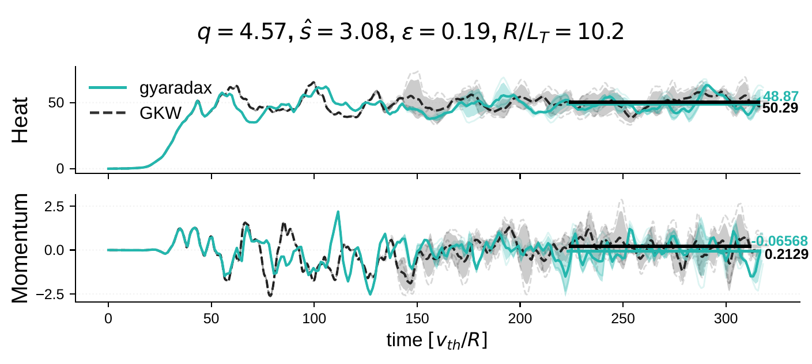
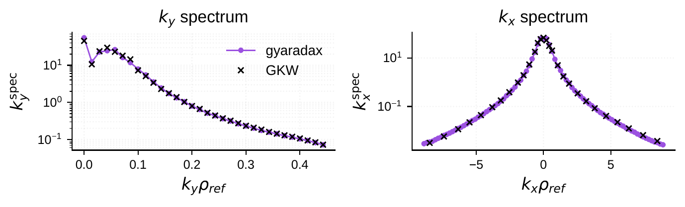
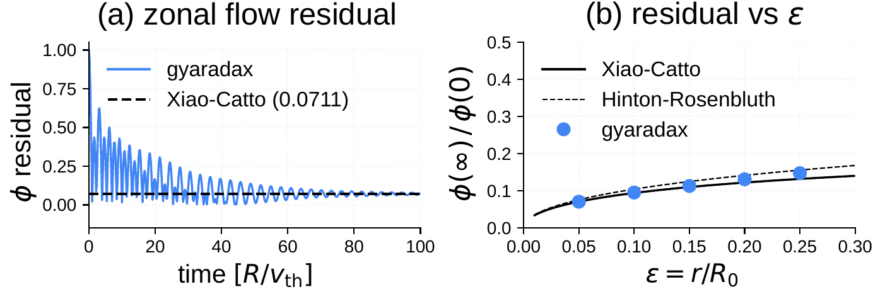
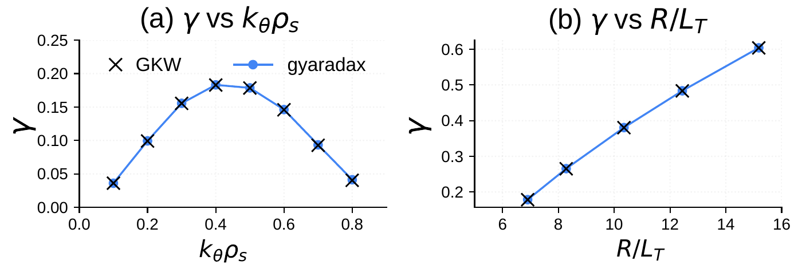
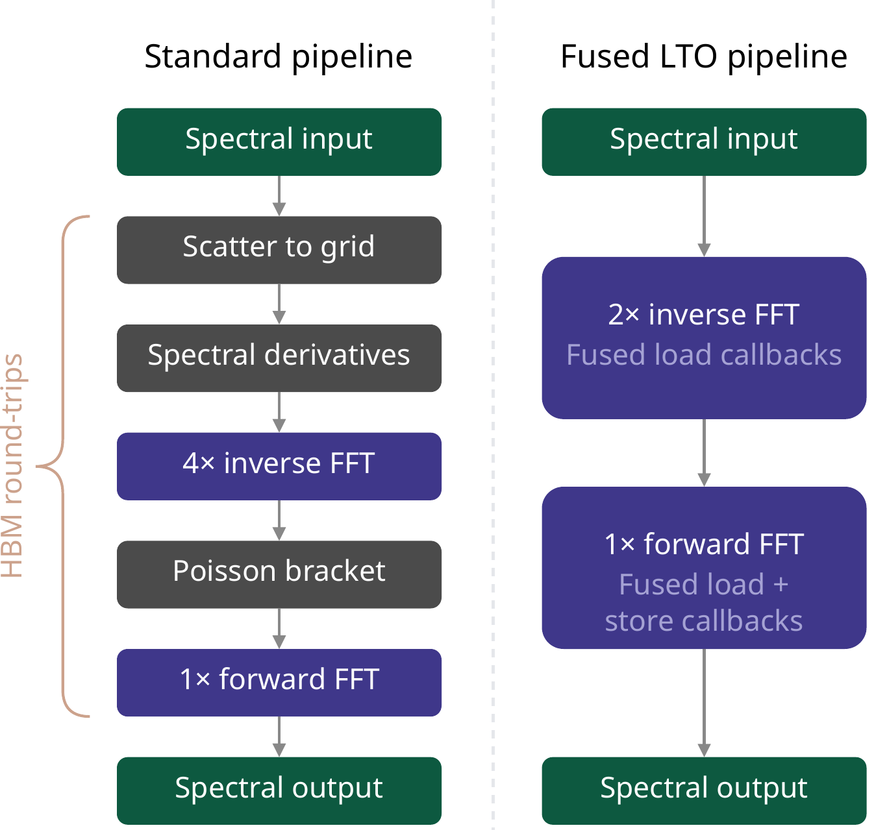
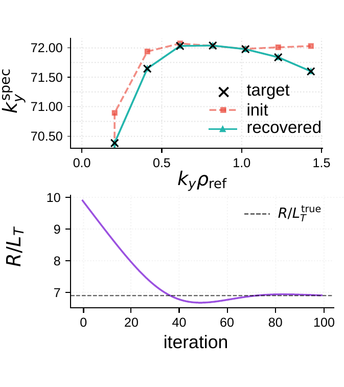
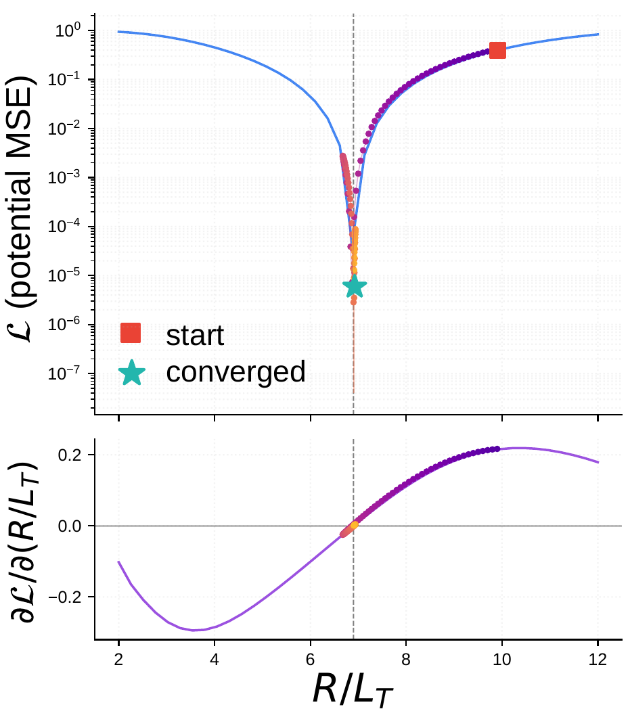

gyaradax: Local Gyrokinetics in JAX
Gianluca Galletti, Eric Volkmann, Johannes Brandstetter
April 2026
gyaradax is a minimal JAX reimplementation of the GKW gyrokinetic solver: ~3,000 lines of Python that match the Fortran reference to machine precision, run on GPUs, and are end-to-end differentiable.
Development was driven by coding agents with human oversight. Custom CUDA kernels provide an additional 2.7x speedup over the XLA-compiled baseline.
Why another gyrokinetics code?
Gyrokinetic codes like GKW solve the 5D Vlasov-Poisson system that governs microscale turbulence in magnetically confined plasmas. These codes are mature and well-validated, but they are written in Fortran with MPI parallelism, making them difficult to integrate with gradient-based optimization, neural surrogates, or differentiable physics pipelines.
gyaradax provides the same physics in a format that modern ML researchers can actually use: a pure-Python, functional JAX codebase with native GPU support and automatic differentiation through the full solver.
What it solves
The solver evolves the perturbed distribution function f(v||, μ, s, kx, ky) under the gyrokinetic equation. The active RHS terms are:
- Terms I, IV — Parallel streaming and mirror trapping (finite-difference stencils along the field line and in velocity space)
- Term II — Magnetic drift advection
- Term III — Nonlinear E×B advection (pseudospectral Poisson bracket with dealiased 2D FFTs)
- Terms V, VII, VIII — Equilibrium and field-gradient drives
Both adiabatic (single ion species) and kinetic electron (multi-species) configurations are supported. Time integration is explicit RK4 with adaptive CFL.


Formal verification
Beyond empirical parity across 46 ITG equilibria, we verify gyaradax on two standard analytical benchmarks.
Rosenbluth-Hinton zonal flow test
The RH test is a sensitive end-to-end check of the field solver and linear dynamics. A zonal flow (kζ=0) excites a geodesic acoustic mode that oscillates and damps via collisionless Landau damping. The long-time residual is given analytically by φ(∞)/φ(0) = 1/(1 + q2Θ/ε2).
At q=1.3, ε=0.05, gyaradax converges to a residual of 0.0711, matching the analytical prediction. A scan over ε at fixed q follows the analytical curve across the full range.

Cyclone Base Case
The CBC is the standard linear benchmark for ITG-driven instability. At q=1.4, ŝ=0.78, ε=0.19, R/Ln=2.2 with s-alpha geometry, gyaradax matches GKW growth rates both as a function of kθρs and as a function of R/LT.

Performance: mixed precision and CUDA kernels
Two orthogonal optimizations improve throughput beyond what XLA provides out of the box:
Mixed-precision nonlinear FFTs
The eight 2D FFTs per RK4 step (four inverse, one forward, per species) dominate the nonlinear cost. Casting spectral arrays to FP32 before the inverse FFTs halves the memory bandwidth, with the forward FFT output promoted back to FP64 for accumulation. This is safe because the Poisson bracket is a local real-space product — the FP32 error is suppressed by the dealiasing zero-padding.
Z2Z two-for-one packing
Both spatial derivatives of the same field (ikx f̂ and iky f̂) are packed into a single complex-to-complex (C2C) inverse FFT, reducing the count from four to two. A Hermitian symmetrization correction at ky=0 prevents channel leakage from the Bessel function's symmetry defect.
Custom CUDA kernels
For the linear RHS, a single CUDA kernel fuses the 9-point parallel stencil, 5-point velocity stencil, and all 8 elementwise physics terms. XLA compiles most of this into one kernel, but uses general-purpose gather operations for the stencils; our kernel uses direct strided addressing with compile-time boundary constants.
For the nonlinear term, XLA cannot fuse across cuFFT calls. Our CUDA kernel uses Link-Time Optimization (LTO) callbacks to embed the spectral derivative multiplication, gyro-averaging, bracket computation, and spectrum unpacking directly into cuFFT's butterfly passes, avoiding three intermediate global-memory round-trips.

Benchmarks
Grid: (Nkx, Ns, Nμ, Nv, Nky) = (85, 16, 8, 32, 32). Single NVIDIA A100 80GB.
| Configuration | Steps/s | Mem (GB) |
|---|---|---|
| Adiabatic electrons | ||
| GKW Fortran (DP) | 5.8 | 18.0 (RAM) |
| gyaradax JAX (DP) | 9.7 | 9.2 |
| gyaradax JAX (MP) | 22.8 | 9.2 |
| gyaradax CUDA (MP) | 25.9 | 10.8 |
| Kinetic electrons | ||
| GKW Fortran (DP) | 3.4 | 38.8 (RAM) |
| gyaradax JAX (DP) | 5.0 | 34.8 |
| gyaradax JAX (MP) | 12.2 | 34.8 |
| gyaradax CUDA (MP) | — | — |
DP = Float64, MP = Float32 nonlinear FFTs. GKW uses CPU RAM; gyaradax uses GPU VRAM.
Differentiable programming
Because the full solver is a pure JAX function, we can compute gradients of any scalar output with respect to any input. Two examples from the paper:
- Sensitivity analysis:
jax.gradof the per-mode growth rate with respect to the temperature gradient, producing a spectral sensitivity map without finite differences. - Geometry optimization: truncated backpropagation through nonlinear turbulence to minimize saturated heat flux with respect to equilibrium parameters (q, ŝ, ε).


jax.grad through the full 400-step solver. Left: initial, target, and recovered ky spectra (top) and R/LT convergence (bottom). Right: loss landscape and AD gradient, with the Adam trajectory overlaid.Vibecoding: agents wrote the solver
The core solver was translated from >30,000 lines of Fortran by coding agents (GPT-5.3 Codex, Claude 4.6 Opus) with human oversight. The key enabler was an empirical test-driven workflow: GKW reference trajectories and unit tests provided measurable progress signals that the agents could optimize against. The CUDA kernels were generated by a multi-agent pipeline with a dual-LLM consensus loop for optimization strategy, followed by iterative implementation by fast coding models.
Links
- Code on GitHub
- Paper on arXiv
- GyroSwin blog post — our neural surrogate for the same physics